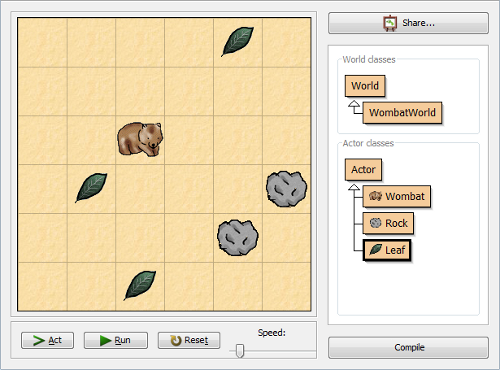
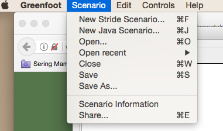
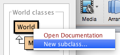
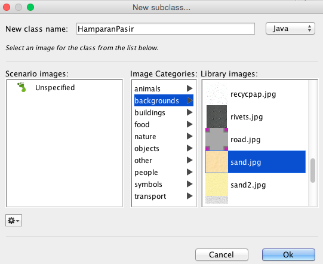
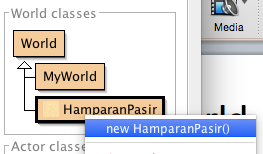
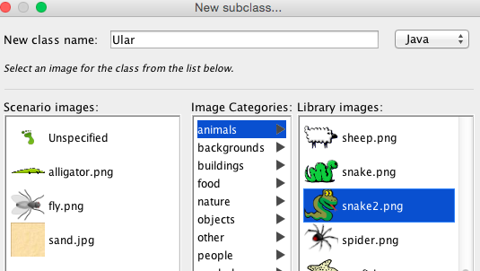
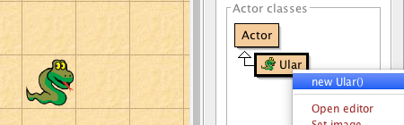
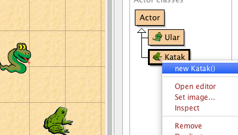
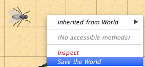
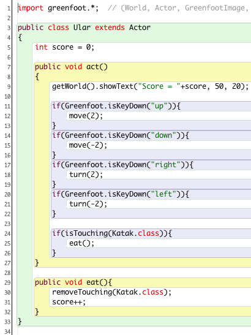

Jobsheet 01
Greenfoot
Table of Contents
1 Kompetensi
Setelah menempuh pokok bahasan ini, mahasiswa mampu:
- Mengidentifikasi obyek-obyek yang akan terlibat dalam scenario di Greenfoot.
- Membuat scenario sederhana (menggerakkan, membelokkan dan mendeteksi interseksi obyek) menggunakan Greenfoot.
- Memahami konsep/paradigma pemrograman berorientasi obyek melalui pengalaman membuat scenario di greenfoot.
2 Pendahuluan
Greenfoot dikembangkan oleh Programming Education Tools Group yang ada di School of Computing, Kent University, UK. Greenfoot merupakan framework untuk membuat aplikasi grafis 2 dimensi yang interaktif. Greenfoot meng-handle suatu aplikasi dalam bentuk skenario, dimana di dalam skenario tersebut akan ada objek- objek yang saling berinteraksi. Misalkan pada skenario Greenfoot pada game Wombat di bawah ini:

Terdapat 3 objek Aktor, yaitu Wombat, Batu dan Daun. Ketika objek actor tersebut berada di dalam WonbatWorld. Antara objek yang satu dengan objek yang lain yang ada di dalam WombatWorld saling berinteraksi. Wombat jika menemui Batu, maka ia akan belok, dan jika Wombat bertemu Daun maka Daun tersebut akan hilang/termakan Wombat.
Ketika hendak membuat skenario di dalam Greenfoot, mahasiswa akan dipaksa untuk mengidentifikasi objek-objek apa yang akan ada di dalam skenario. Setelah itu dilanjutkan dengan mengidentifikasi perilaku/behavior apa yang akan dilakukan oleh tiap objek, dan data/property apa saja yang dimiliki oleh tiap objek. Misal objek Wombat bisa memakan dan bisa berjalan (behaviour), serta memiliki kecepatan dan jumlah daun yang sudah dimakan (data/properti). Konsep berfikir tersebut yang melandasi paradigma pemrograman berorientasi objek. Paradigma Pemrograman Berorientasi Objek memandang suatu sistem terdiri atas objek-objek yang saling berinteraksi di dalamnya, dan tiap objek memiliki karakteristik (perilaku dan data/property/atribut) masing-masing.
Secara garis besar, langkah-langkah dalam membuat aplikasi di Greenfoot antara lain:
- Definisikan skenario yang akan dibuat
- Definisikan objek-objek apa yang akan ada di dalam skenario
- Buat cetakan/template dari tiap objek. Template dari world dengan cara membuat turunan dari class World. Sedangkan template actor dibuat dengan membuat turunan dari class Actor.
- Buat objek nyata (lakukan instansiasi) dari template yang sudah dibuat, dan masukkan ke dalam world.
- Sesuaikan program dari tiap actor sehingga ia bisa berperilaku sesuai dengan
yang diinginkan
3 Percobaan
3.1 Instalasi Greenfoot
Greenfoot menyediakan paket instalasi pada berbagai platform sistem operasi. Sehingga Greenfoot memiliki dukungan yang tinggi dalam penggunaannya.
- Download installer Greenfoot di http://www.greenfoot.org/download. Pilih paket installasi yang sesuai dengan platform sistem operasi yang digunakan.
- Pada sistem operasi Windows, setelah proses download installer selesai, untuk memulai instalasi bisa dilakukan dengan double-click pada file installer.
- Proses instalasi bisa dilakukan dengan menekan tombol next, hingga proses instalasi selesai.
3.2 Membuat Skenario Sederhana
Skenario yang dibuat dalam percobaan ini adalah sebagai berikut: (1) terdapat objek ular dan katak yang ada di dalam world (2) pergerakan ular bisa dikontrol dengan keyboard, tombol kiri untuk belok kiri, tombol kanan untuk belok kanan, tombol atas untuk gerak maju dan tombol bawah untuk gerak mundur. (3) katak diam saja (4) jika katak bertemu ular, maka katak akan hilang dan akan muncul satu lagi katak dalam posisi yang random.
- Buat skenario baru, pilih Scenario -> New Java Scenario

- Buat class HamparanPasir, yang merupakan turunan/subclass dari class World. Klik kanan class World -> New subclass

- Kemudian lengkapi pengaturannya.

- Jika tampilan world yang baru dibuat tadi belum muncul, maka selanjutnya dilakukan proses instansiasi. Instansiasi ditujukan untuk membuat objek nyata dari class yang sudah dibuat tadi. Kenapa peru dilakukan instansiasi? Karena pada dasarnya class masih berupa template/rancangan, sehingga perlu direalisasikan ke dalam objek nyata dulu sebelum ia bisa digunakan.
- Klik kanan class HamparanPasir > new HamparanPasir()

- Dengan cara yang hampir sama dengan langkah-langkah di atas, selanjutnya dibuat class actor ular dan katak.
- Klik kanan class Actor > New sublass

- Kemudian, lengkapi pengaturannya. Berikan nama Ular pada nama class dan pilih gambar ular.

- Buat objek Katak dan Ular, dan masukan masing-masing ke dalam world
HamparanPasir.
- Klik kanan class Ular > new Ular() kemudian taruh ke dalam world

- Lakukan hal yang sama untuk membuat objek dari Katak.

- Untuk menyimpan semua yang telah ditambahkan ke world, klik kanan pada objek world > Save the world

- Berikan kode program untuk mengontrol gerak pada class Ular. Klik kanan class
Ular > Open editor. Buat fungsi eat() dan tambahkan sintaks program di dalam fungsi act().

- Simpan scenario
- Jalankan menggunakan tombol control Run
4 Pertanyaan
- Jelaskan apa yang harus dilakukan sebelum membuat scenario/aplikasi di Greenfoot!
- Pada saat membuat world maupun actor, yang dilakukan pertama kali adalah membuat subclass dari class world/actor. Berikan penjelasan tentang subclass!
- Setelah dibuat class Katak/Ular, ketika hendak menempatkannya atau menggunakannya di dalam world, maka perlu dilakukan instansiasi (pembuatan objek). Berikan penjelasan tentang hubungan antara class dan object!
- Dengan memperhatikan sintaks program class Ular yang ditunjukan pada langkah 7 Percobaan 2 di atas, apa saja yang ada di dalam suatu class?
- Perhatikan kembali class Ular yang ditunjukan pada langkah 7 Percobaan 2 di atas, pada baris 25, apa yang dilakukan pada sintaks tersebut?
5 Tugas
Buatlah scenario permainan sederhana yang baru menggunakan Greenfoot. Scenario yang dibuat usahakan berbeda dengan yang sudah dibuat pada jobsheet ini. Dan minimal terdapat 2 aktor yang terlibat di dalamnya.